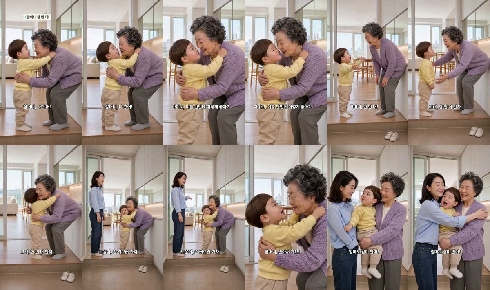

할머니 «한 번 더» 편
2026-11-02 · 20.1초 · 7컷 · 판 R20 · D0~D8 통과 · 3사 판정 ①②③ 통과 · 아직 등록 안 함
봐 주셔야 할 것
- 대표님 지적대로 바꿨습니다 — 의자 없이 할머니가 서서 숙여 안기, 할머니 자리 고정(기준 그림), 서로 보기(카메라 안 보기).
- 5번(엄마 «손 씻으러 가자») 넓은 화면에서 도윤이가 잠깐 카메라 쪽을 봅니다.
- «손 씻으러»가 조금 뭉개져 들립니다(받아쓰기 «스스러»). «한 번 더 안자»는 «앉아»와 같은 소리라 자막으로 뜻을 고정했습니다.
대사
| 컷 | 대사 | 음높이 |
|---|---|---|
| 1 | 도윤 «할머니, 나 왔어!» | 400Hz |
| 2 | 할머니 «아이고, 이틀 만인데 이렇게 좋아?» | 190Hz |
| 3 | 도윤 «할머니, 한 번 더!» | 390Hz |
| 4 | 할머니 «그래, 한 번 더 안자.» | 216Hz |
| 5 | 엄마 «도윤아, 손 씻으러 가자.» | 317Hz |
| 6 | 도윤 «할머니, 안아서 가요!» | 348Hz |
| 7 | 도윤 «엄마도 같이 안아!» | 364Hz |
도윤 음높이 기준선 330Hz 이상 통과 · 완성본 받아쓰기가 대본 7줄과 같은 순서·뜻
썸네일
흰 줄 «할머니, 한 번 더!» · 노란 줄 «안아서 가요!» — 결말(«엄마도 같이 안아!»)은 숨김
완성본 프레임
